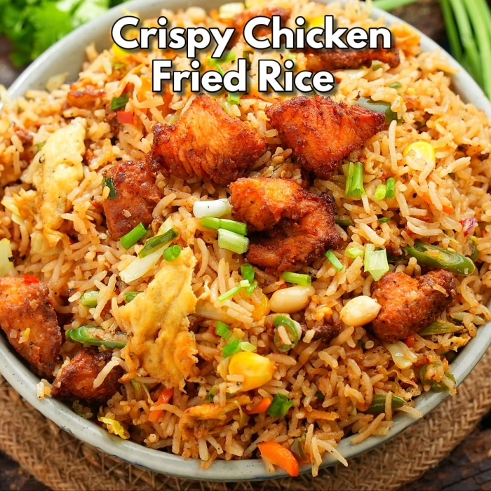

Garlic Fried Rice
Aromatic and flavorful, this garlic fried rice recipe is perfect as a side or main dish.

Burnt Garlic Fried Rice
Intensely flavored with burnt garlic, this fried rice is a savory delight.
Veg Fried Rice
Light and nutritious, this vegetable fried rice is a wholesome meal option.

Schezwan Veg Fried Rice
Spicy and tangy, this Schezwan-style fried rice brings a burst of flavors.

Desi Style Crispy Chicken Fried Rice
Crispy chicken combined with fragrant rice makes this dish a crowd-pleaser.

Chicken Fried Rice Recipe
Classic and satisfying, this chicken fried rice is perfect for any mealtime.